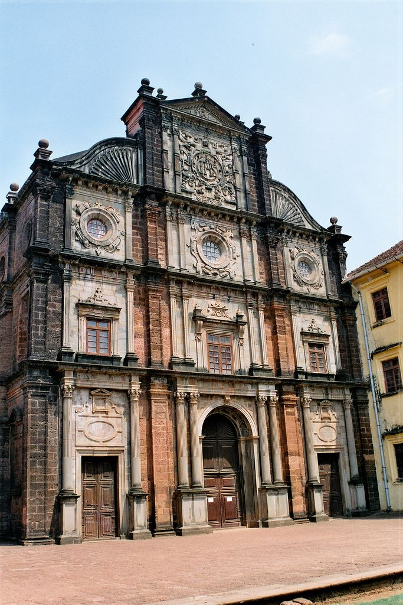

Goa’s culture is a unique blend of Indian and Portuguese influences, shaped by over 450 years of Portuguese colonial rule. This fusion is reflected in the state’s architecture, music, dance, and lifestyle. The Goan people are known for their warm hospitality and laid-back attitude, with a deep connection to their traditions and customs. The music scene is vibrant, with genres like Konkani folk, Portuguese Fado, and Western music all playing significant roles. Goan culture also embraces a variety of art forms, including traditional dance forms like Dekhni and Fugdi, alongside the colorful folk art that adorns local festivals and temples.
Goa is famous for its lively and colorful festivals, which are a significant part of its cultural fabric. The most well-known is the Carnival, a grand celebration of music, dance, and parades, held every February before Lent. Shigmo, the Goan version of Holi, is another popular festival marked by vibrant processions, folk dances, and street performances. Additionally, the Feast of St. Francis Xavier, celebrated in December, attracts pilgrims and tourists alike to pay homage at the Basilica of Bom Jesus. These festivals, with their exuberant spirit and unique rituals, showcase Goa’s rich cultural diversity and religious harmony.
Goan cuisine is a delightful fusion of spices, seafood, and coconut, offering a gastronomic experience like no other. Seafood, such as prawns, crab, and fish, is central to Goan dishes, often cooked in rich, tangy curries made with tamarind, coconut milk, and local spices. Popular dishes include the spicy Fish Curry Rice, the savory Pork Vindaloo, and the sweet Bebinca, a traditional layered dessert. Feni, a local alcoholic drink made from cashew apples or coconut sap, is also a signature of Goan food culture. The cuisine of Goa is a perfect reflection of its history and geography, offering bold flavors that are a treat for the senses.
Goa is not just about its beautiful beaches but also boasts an array of attractions that cater to all types of tourists. The state’s beaches, such as Baga, Calangute, and Anjuna, are famous for their vibrant atmosphere, water sports, and sunset views. For history enthusiasts, Goa offers magnificent architectural landmarks like the Basilica of Bom Jesus and Se Cathedral, both UNESCO World Heritage sites. The Dudhsagar Waterfalls, located in the Western Ghats, are another must-see natural wonder. Visitors can also explore the lively markets in Mapusa and Anjuna, which sell everything from local handicrafts to unique souvenirs. Goa’s rich blend of natural beauty, cultural landmarks, and festive ambiance makes it a top travel destination.